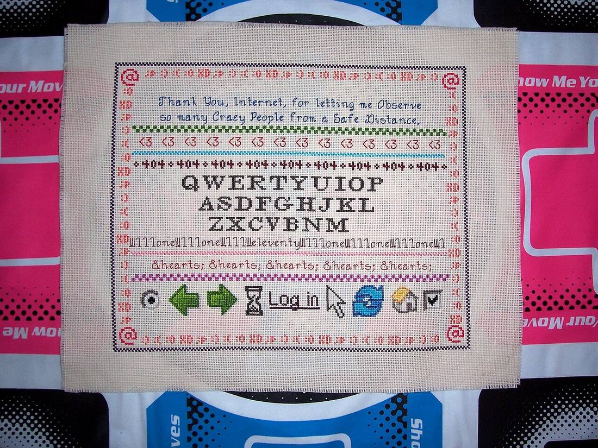
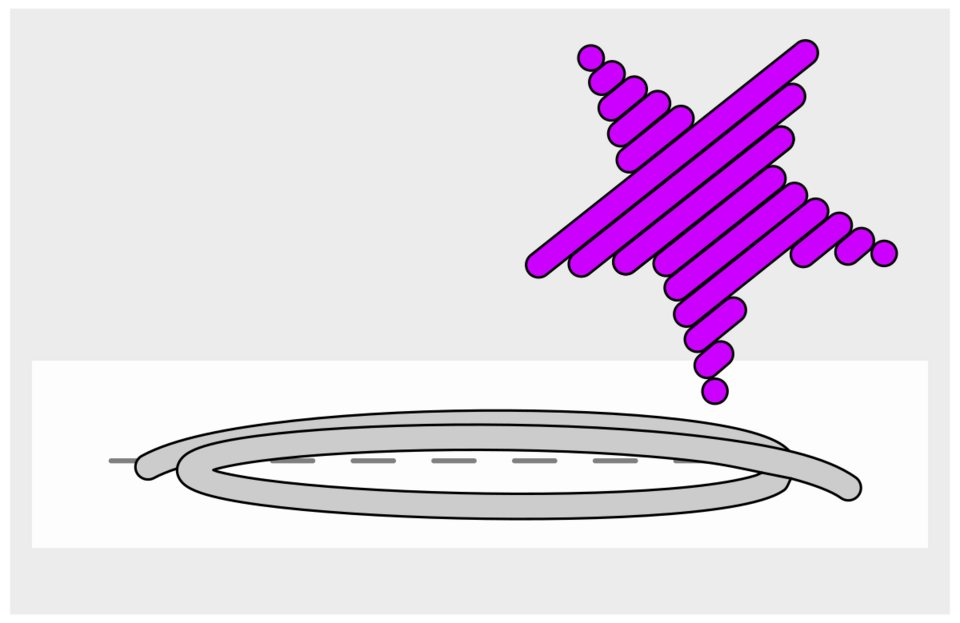
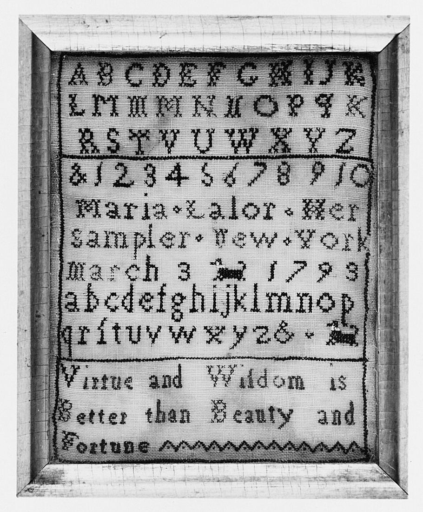
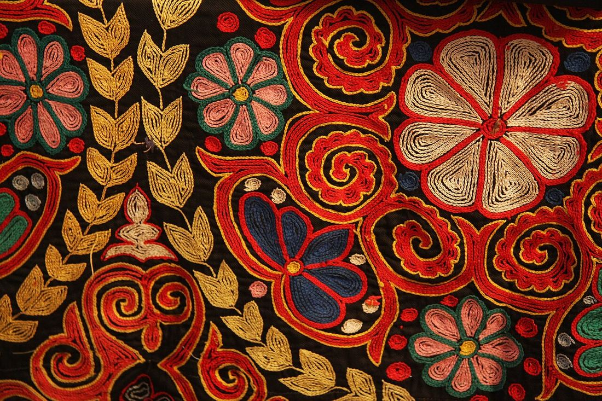
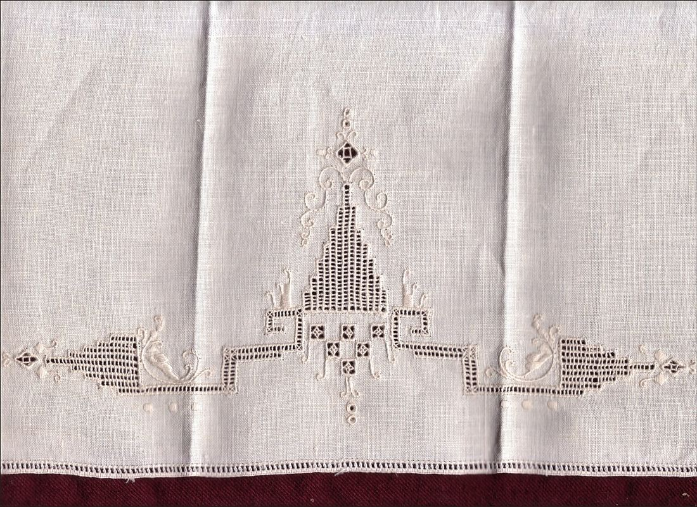
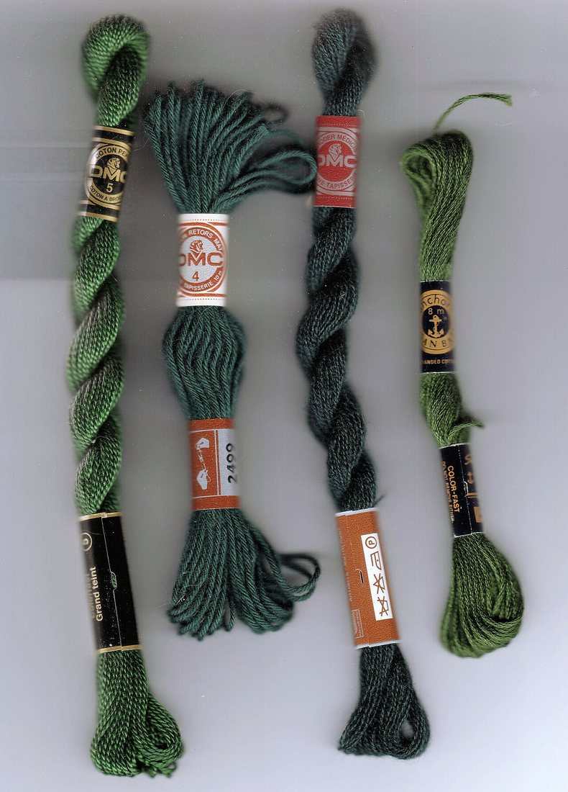
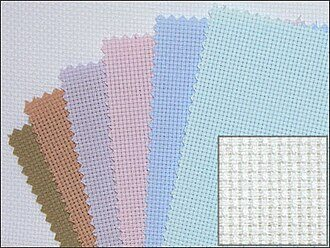
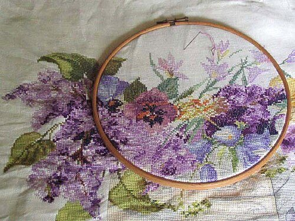
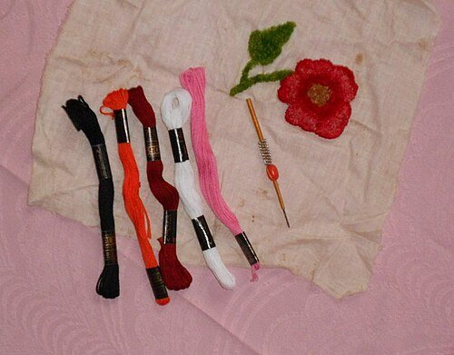
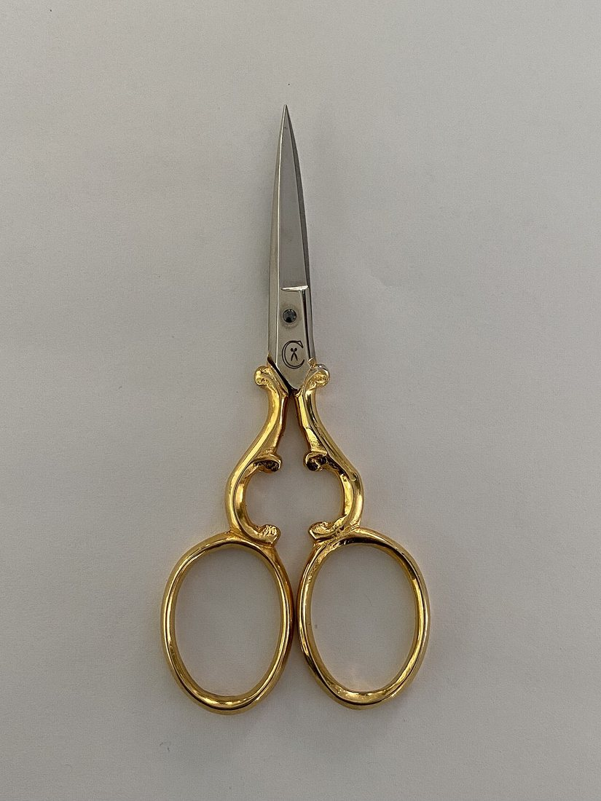

Көркем еңбек · 3-бөлім · Қол өнері Art & Craft · Section 3 · Needlework Художественный труд · Раздел 3 · Рукоделие
🧵 Көркем кесте: түрлері, материалдары, құралдары
🧵 Artistic Embroidery: Types, Materials, Tools
🧵 Художественная вышивка: виды, материалы, инструменты
Инеmen, жіппен әрі матамен әсем өрнек тігу өнері. The art of stitching a beautiful pattern with a needle, thread and cloth. Искусство создавать красивый узор иглой, нитью и тканью.
Көркем кесте (художественная вышивка) — матаға ине мен түрлі-түсті жіп арқылы өрнек, сурет немесе жазу түсіретін қол өнерінің бір түрі. Бұл — тек әшекейлеу ғана емес, ойды, сезімді және халықтың дүниетанымын білдіретін көркем тіл. Кестенің әр тігісі, әр түсі белгілі бір мағынаға ие болады. Artistic embroidery is a kind of needlework in which a pattern, picture or lettering is worked onto cloth with a needle and coloured threads. It is not only decoration: it is an artistic language that expresses ideas, feelings and the world-view of a people. Every stitch and every colour carries meaning. Художественная вышивка — это вид рукоделия, в котором на ткани иглой и цветными нитями создают узор, рисунок или надпись. Это не просто украшение, а художественный язык, выражающий мысли, чувства и мировоззрение народа. Каждый стежок и каждый цвет несут определённый смысл.
Қазақ халқында кесте ерекше орын алады. Ою-өрнекпен текемет, сырмақ, түскиіз, тұскілем, киім мен бас киім, ат әбзелдері әшекейленген. Қыз баланы жастайынан кесте тігуге үйреткен — бұл ұқыптылықтың, шеберліктің әрі сұлулықты сезінудің мектебі болған. Бүгінде көркем кесте — ұлттық мұраны сақтаудың жанды жолы. Among the Kazakh people embroidery holds a special place. Ornament decorated tekemet and syrmak felts, tuskiiz wall-hangings, carpets, clothing, headwear and horse harness. Girls were taught to embroider from an early age — it was a school of neatness, skill and a feeling for beauty. Today artistic embroidery is a living way of preserving the national heritage. У казахского народа вышивка занимает особое место. Орнаментом украшали текемет и сырмак, настенный тускиiз, ковры, одежду, головные уборы и конскую сбрую. Девочек с малых лет учили вышивать — это была школа аккуратности, мастерства и чувства красоты. Сегодня художественная вышивка — живой способ сохранения национального наследия.

🔍 Үлкейту үшін басыңыз🔍 Tap to enlarge🔍 Нажмите, чтобы увеличить
Кестенің негізгі түрлері Main Types of Embroidery Основные виды вышивки
🔍 Әр түрін жақыннан көру үшін суретті басыңыз. Түр — тігістің түріне қарай ажыратылады. 🔍 Tap an image to see each type up close. A type is defined by the kind of stitch used. 🔍 Нажмите на изображение, чтобы рассмотреть каждый вид. Вид определяется типом стежка.

Тегіс кесте · ГладьSatin stitch · ГладьГладь
Жіптер бір-біріне тығыз, қатар салынып, пішінді толтырады. Бет жылтыр әрі тегіс шығады. Гүл, жапырақ салуға таптырмас.Threads are laid side by side, tightly filling a shape. The surface comes out smooth and glossy. Ideal for flowers and leaves.Нити кладут вплотную друг к другу, заполняя форму. Поверхность получается гладкой и блестящей. Хороша для цветов и листьев.

Айқыш тігіс · КрестCross-stitch · КрестКрест
Әр тігіс екі қиылысқан сызықтан («×») тұрады және тор бойымен есептеліп салынады. Үйренуге оңай, схемамен жұмыс істейді.Each stitch is two crossing lines («×»), counted and placed over a grid. Easy to learn and worked from a chart.Каждый стежок — два пересечения («×»), которые считают и кладут по клеткам. Легко освоить, работают по схеме.

Ілмек тігіс · ТамбурChain stitch · ТамбурТамбурный шов
Әр ілмек алдыңғысының ішінен шығып, тізбек құрайды. Контур мен иілген сызықтарды салуға қолайлы, тез әрі әсем.Each loop comes out of the previous one, forming a chain. Good for outlines and curved lines — fast and decorative.Каждая петля выходит из предыдущей, образуя цепочку. Удобен для контуров и изогнутых линий — быстро и нарядно.

Ою-кесте · Біз кестеOyu-keste · Biz kesteОю-кесте / бiз кесте
Қазақтың дәстүрлі кестесі: «біз кесте» арнайы ілгекпен (тамбур) тез тігіледі. Қошқар мүйіз, гүл, шиыршық өрнектерімен түскиіз, киім әшекейленеді.Traditional Kazakh embroidery: «biz keste» is worked quickly with a tambour hook. Ram-horn, floral and spiral motifs decorate tuskiiz and clothing.Традиционная казахская вышивка: «бiз кесте» быстро выполняют тамбурным крючком. Мотивами рогов, цветов и завитков украшают тускиiз и одежду.

Мережка · АжурDrawn-thread · МережкаМережка
Матадан бірнеше жіп суырылып, қалғандары шоғырланып байланады — ашық, торлы өрнек шығады. Жиектерді, орамалды әсемдейді.Several threads are pulled from the cloth and the rest are bunched and tied — giving an open, net-like band. Decorates edges and napkins.Из ткани выдёргивают несколько нитей, а остальные стягивают и связывают — получается ажурная полоса. Украшает каймы и салфетки.
💡 Есте сақта💡 Keep in mind💡 Запомни
Кестенің түрін тігіс белгілейді: гладь — тегіс, крест — «×», тамбур — ілмек. Бір өрнекте бірнеше тігісті қатар қолдануға болады. A type of embroidery is defined by its stitch: satin — flat, cross — «×», chain — loops. Several stitches can be combined in one design. Вид вышивки задаёт стежок: гладь — плоский, крест — «×», тамбур — петля. В одном узоре можно сочетать несколько стежков.
Материалдар Materials Материалы
Кесте тігу үшін қажетті негізгі материалдар — жіп пен мата. The basic materials you need to embroider — thread and cloth. Основные материалы, без которых не вышить, — нитки и ткань.

Мулине · ЖіпFloss · ThreadМулине
Жылтыр мақта жіп, 6 жіңішке талшықтан тұрады — қажетіне қарай 1–6 талшық алынады. Жүздеген түсі бар.Glossy cotton thread of 6 fine strands — you separate 1–6 as needed. Comes in hundreds of colours.Блестящая хлопковая нить из 6 тонких сложений — отделяют 1–6 по надобности. Сотни оттенков.

Канва · МатаCanvas · FabricКанва / ткань
Канва — анық төртбұрышты тормен тоқылған мата (мыс. «Аида»). Тор есеп тігісті (крест) жеңілдетеді. Гладьге тегіс мата алынады.Canvas is cloth woven with a clear square grid (e.g. Aida). The grid makes counted cross-stitch easy. For satin stitch a smooth fabric is used.Канва — ткань с чёткой квадратной сеткой (напр. «Аида»). Сетка облегчает счётный крест. Для глади берут гладкую ткань.

Кергіш · ПяльцыHoop · ПяльцыПяльцы
Екі шеңбердің арасына мата керіледі. Тартылған мата бүгілмейді, тігіс біркелкі әрі таза шығады. Ағаштан немесе пластиктен жасалады.The cloth is stretched between two rings. Taut fabric does not pucker, so stitches come out even and neat. Made of wood or plastic.Ткань натягивают между двумя кольцами. Натянутая ткань не морщится, и стежки выходят ровными. Бывают деревянные и пластиковые.
Құралдар Tools Инструменты
Қол құралдары жұмысты дәл, ұқыпты әрі қауіпсіз етеді. Hand tools make the work precise, neat and safe. Ручные инструменты делают работу точной, аккуратной и безопасной.

Ине · ИглаNeedle · ИглаИгла
Жіп өткізетін көзі (құлағы) бар. Кесте инесінің көзі кең, ұшы әртүрлі: крестке доғал, гладьге үшкір. Матаға қарай таңдалады.Has an eye for the thread. Embroidery needles have a wide eye; the point varies — blunt for cross-stitch, sharp for satin. Chosen to match the fabric.Имеет ушко для нити. У вышивальной иглы широкое ушко; кончик разный — тупой для креста, острый для глади. Подбирают под ткань.

Қайшы · НожницыScissors · НожницыНожницы
Кесте қайшысы кішкентай әрі үшкір — жіптің ұшын дәл, матаға тиместен қияды. Тек жіп пен матаға арналады, қағаз кеспейді.Embroidery scissors are small and sharp — they snip thread ends precisely without harming the cloth. For thread and fabric only, never paper.Вышивальные ножницы маленькие и острые — точно срезают концы нити, не задевая ткань. Только для нити и ткани, не для бумаги.

Оймақ · НапёрстокThimble · НапёрстокНапёрсток
Ортаңғы саусаққа киіледі. Инені тығыз матадан итеруге көмектеседі әрі саусақты шаншудан сақтайды. Металдан жасалады.Worn on the middle finger. It helps push the needle through firm cloth and protects the finger from pricks. Usually metal.Надевают на средний палец. Помогает проталкивать иглу сквозь плотную ткань и защищает палец от уколов. Обычно металлический.
🛡️ Қауіпсіздік ережелері 🛡️ Safety Rules 🛡️ Правила безопасности
Ине мен түйреуішті санап ал.Count needles and pins.Считай иглы и булавки. Оларды тек инелікте (игольница) сақта, ауызға салма, киімге қадама.Keep them only in a pincushion; never put them in your mouth or stick them into your clothes.Храни их только в игольнице, не бери в рот и не втыкай в одежду.
Қайшыны дұрыс бер.Pass scissors safely.Передавай ножницы правильно. Сақинасын алға қаратып, жабық күйде ұста; үстелде ұштарын жауып қой.Hand them closed, rings first; on the table leave them with the blades shut.Держи кольцами вперёд и закрытыми; на столе клади со сомкнутыми лезвиями.
Оймақ кий.Use a thimble.Надевай напёрсток. Инені итергенде саусақты шаншудан сақтайды; жіпті тіспен үзбе.It protects your finger when pushing the needle; never bite the thread off with your teeth.Он бережёт палец при проталкивании иглы; не откусывай нить зубами.
Жарық пен дене қалпы.Light and posture.Свет и осанка. Жарық сол жақтан түссін, арқаңды тік ұста, көзіңе демалыс бер.Let light fall from the left, keep your back straight and rest your eyes.Свет — слева, спину держи прямо, давай отдых глазам.
💬 Қорытынды 💬 In a nutshell 💬 Главное
Көркем кесте — түрден (гладь, крест, тамбур, ою-кесте, мережка), материалдан (мулине, канва, кергіш) және құралдан (ине, қайшы, оймақ) тұратын тұтас өнер. Дұрыс таңдалған тігіс пен материал, қауіпсіз жұмыс — әсем әрі ұқыпты кестенің кепілі. Осылай ине мен жіп қарапайым матаны ұлттық өнер туындысына айналдырады. Artistic embroidery is a whole art made of a type (satin, cross, chain, oyu-keste, drawn-thread), materials (floss, canvas, hoop) and tools (needle, scissors, thimble). The right stitch and material plus safe working habits are the secret of neat, beautiful embroidery. This is how a needle and thread turn plain cloth into a work of national art. Художественная вышивка — это целостное искусство из вида (гладь, крест, тамбур, ою-кесте, мережка), материалов (мулине, канва, пяльцы) и инструментов (игла, ножницы, напёрсток). Верно выбранный стежок и материал плюс безопасная работа — залог аккуратной и красивой вышивки. Так игла и нить превращают простую ткань в произведение национального искусства.